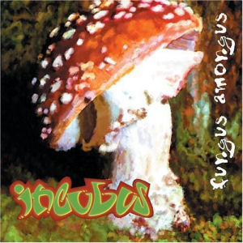

|
|
 |
 |
 |
Há mais de duas décadas, o Incubus tem sido uma força inovadora na cena musical, combinando elementos de rock alternativo, funk, metal e eletrônica para criar um som verdadeiramente único. Originária de Calabasas, Califórnia, a banda rapidamente conquistou uma base de fãs devotos com sua música eclética e letras introspectivas.
Desde o lançamento de seu álbum de estreia, "Fungus Amongus", em 1995, o Incubus tem sido aclamado pela crítica e pelos fãs por sua habilidade de transcender os limites do gênero. Hits como "Drive" e "Wish You Were Here" se tornaram hinos do rock moderno.
|  |
Ao longo dos anos, o Incubus continuou a evoluir e a experimentar, lançando álbuns que desafiaram as expectativas e empurraram os limites do seu som. Com uma química única entre os membros da banda, eles conseguiram manter sua relevância em uma indústria musical em constante mudança.
Sob a liderança de Brandon Boyd, o Incubus continuou a explorar novos territórios musicais, combinando letras profundas com arranjos complexos e inovadores. Sua música fala à alma e ressoa com uma geração de ouvintes em busca de autenticidade e significado.
Com uma base de fãs apaixonados em todo o mundo e uma discografia diversificada, o Incubus é verdadeiramente uma das bandas mais influentes da sua era. E sua jornada musical está longe de terminar, pois continuam a desafiar as convenções e a inspirar novas gerações de músicos e ouvintes.